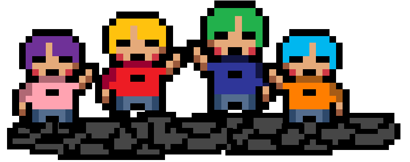
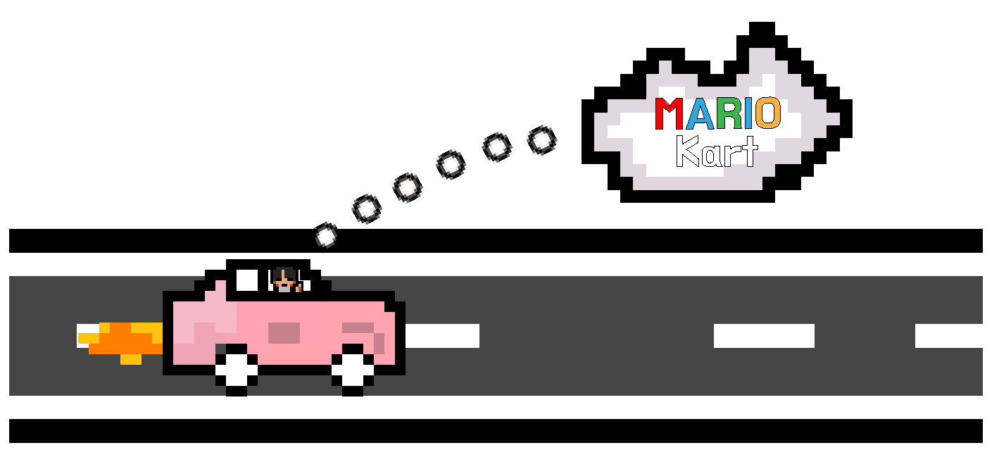
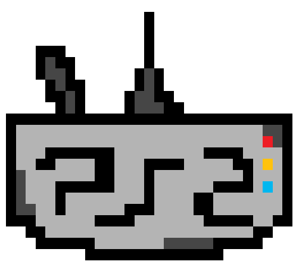
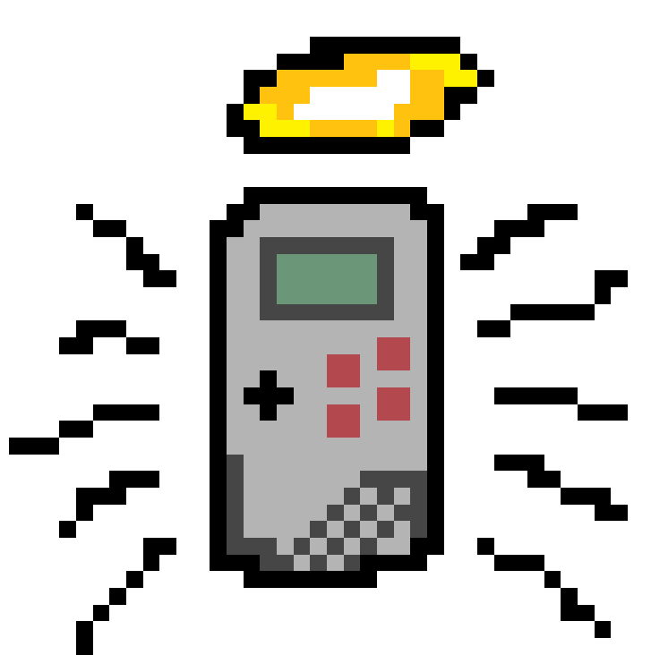
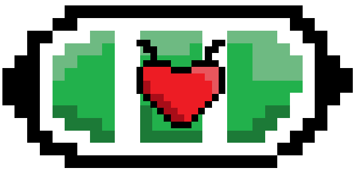

Collectie
Tijdens mijn bezoek aan de retro gaming winkel in Amsterdam werd ik overweldigd door de uitgebreide collectie. Ik heb uiteindelijk een top 5 gemaakt van wat ik het meest interessant en leuk vond.

De Nintendo Wii is voor mij een doos vol herinneringen. Het staat voor mij op nummer 1! De Wii was de eerste console waarmee ik echt het gevoel had dat gamen iets was dat je samen deed. Ik herinner me de avonden met vrienden, waarin we urenlang Wii Party speelden. Het is een console die voor mij vrienden en familie dichterbij bracht, en dat maakt hem onvergetelijk!
De Nintendo DS staat voor mij op nummer twee, dit scheelt niet veel met nummer 1 zou ik je zeggen. Voor mij is dit de console die me wel altijd het meest bij zal blijven. Ik herinner me urenlang spelen op mijn DS, of het nu onderweg was, thuis op de bank, of tijdens vakanties. De DS bracht zoveel plezier voor mij en mijn favoriete game hierop was mario kart!
Op nummer 3 staat de PS2. Deze console kwam uit toen ik nog niet eens geboren was, maar als een fan van gaming kan ik zien waarom vele mensen hiervan houden. Ik speel zelf vaak ook op de playstation en telkens als ik het verhaal hoor over de PS2 wekt het me interesse. Ik weet nog dat me neef een PS2 had en hij vond het geweldig, vooral sinds de game Grand Theft Auto uitkwam. Je kon ook op de PS2 DVD”S afspelen. Veel mensen kochten hem zelfs vooral om films op DVD te kunnen kijken, en dat maakte de PS2 naast een gameconsole eigenlijk een muktimedia-apparaat in één.
Helaas heb ik de release en tijd van de Game Boy niet mee kunnen maken, maar dit was ook een fantastische console. Wat de Game Boy echt uniek maakte, was zijn eenvoud en duurzaamheid. Het monochrome scherm was misschien niet het beste, maar het zorgde er wel voor dat de batterijen ontzettend lang meegingen. Met vier AA-batterijen kon je urenlang spelen, wat hem perfect maakte voor lange autoritten of vakanties.
Bovendien was de Game Boy praktisch onverwoestbaar. Er zijn verhalen van apparaten die van grote hoogtes vielen of zelfs onder bizarre omstandigheden overleefden, zoals een gameboy dat na een bombardement in de oorlog nog steeds werkte.
